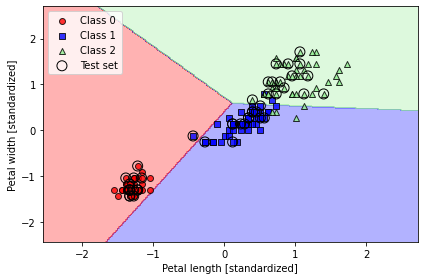
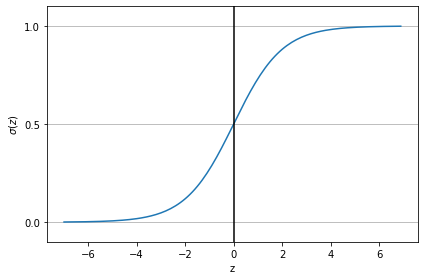

4. Machine Learning with PyTorch and Scikit-Learn#
5. – Code Examples#
5.1. Package version checks#
Add folder to path in order to load from the check_packages.py script:
import sys
sys.path.insert(0, '..')
Check recommended package versions:
from python_environment_check import check_packages
d = {
'numpy': '1.21.2',
'matplotlib': '3.4.3',
'sklearn': '1.0',
'pandas': '1.3.2'
}
check_packages(d)
---------------------------------------------------------------------------
ModuleNotFoundError Traceback (most recent call last)
Cell In[2], line 1
----> 1 from python_environment_check import check_packages
4 d = {
5 'numpy': '1.21.2',
6 'matplotlib': '3.4.3',
7 'sklearn': '1.0',
8 'pandas': '1.3.2'
9 }
10 check_packages(d)
ModuleNotFoundError: No module named 'python_environment_check'
6. Chapter 3 - A Tour of Machine Learning Classifiers Using Scikit-Learn#
6.1. Overview#
from IPython.display import Image
%matplotlib inline
7. Choosing a classification algorithm#
…
8. First steps with scikit-learn#
Loading the Iris dataset from scikit-learn. Here, the third column represents the petal length, and the fourth column the petal width of the flower examples. The classes are already converted to integer labels where 0=Iris-Setosa, 1=Iris-Versicolor, 2=Iris-Virginica.
from sklearn import datasets
import numpy as np
iris = datasets.load_iris()
X = iris.data[:, [2, 3]]
y = iris.target
print('Class labels:', np.unique(y))
Class labels: [0 1 2]
Splitting data into 70% training and 30% test data:
from sklearn.model_selection import train_test_split
X_train, X_test, y_train, y_test = train_test_split(
X, y, test_size=0.3, random_state=1, stratify=y)
print('Labels counts in y:', np.bincount(y))
print('Labels counts in y_train:', np.bincount(y_train))
print('Labels counts in y_test:', np.bincount(y_test))
Labels counts in y: [50 50 50]
Labels counts in y_train: [35 35 35]
Labels counts in y_test: [15 15 15]
Standardizing the features:
from sklearn.preprocessing import StandardScaler
sc = StandardScaler()
sc.fit(X_train)
X_train_std = sc.transform(X_train)
X_test_std = sc.transform(X_test)
8.1. Training a perceptron via scikit-learn#
from sklearn.linear_model import Perceptron
ppn = Perceptron(eta0=0.1, random_state=1)
ppn.fit(X_train_std, y_train)
Perceptron(eta0=0.1, random_state=1)
y_pred = ppn.predict(X_test_std)
print('Misclassified examples: %d' % (y_test != y_pred).sum())
Misclassified examples: 1
from sklearn.metrics import accuracy_score
print('Accuracy: %.3f' % accuracy_score(y_test, y_pred))
Accuracy: 0.978
print('Accuracy: %.3f' % ppn.score(X_test_std, y_test))
Accuracy: 0.978
from matplotlib.colors import ListedColormap
import matplotlib.pyplot as plt
# To check recent matplotlib compatibility
import matplotlib
from distutils.version import LooseVersion
def plot_decision_regions(X, y, classifier, test_idx=None, resolution=0.02):
# setup marker generator and color map
markers = ('o', 's', '^', 'v', '<')
colors = ('red', 'blue', 'lightgreen', 'gray', 'cyan')
cmap = ListedColormap(colors[:len(np.unique(y))])
# plot the decision surface
x1_min, x1_max = X[:, 0].min() - 1, X[:, 0].max() + 1
x2_min, x2_max = X[:, 1].min() - 1, X[:, 1].max() + 1
xx1, xx2 = np.meshgrid(np.arange(x1_min, x1_max, resolution),
np.arange(x2_min, x2_max, resolution))
lab = classifier.predict(np.array([xx1.ravel(), xx2.ravel()]).T)
lab = lab.reshape(xx1.shape)
plt.contourf(xx1, xx2, lab, alpha=0.3, cmap=cmap)
plt.xlim(xx1.min(), xx1.max())
plt.ylim(xx2.min(), xx2.max())
# plot class examples
for idx, cl in enumerate(np.unique(y)):
plt.scatter(x=X[y == cl, 0],
y=X[y == cl, 1],
alpha=0.8,
c=colors[idx],
marker=markers[idx],
label=f'Class {cl}',
edgecolor='black')
# highlight test examples
if test_idx:
# plot all examples
X_test, y_test = X[test_idx, :], y[test_idx]
plt.scatter(X_test[:, 0],
X_test[:, 1],
c='none',
edgecolor='black',
alpha=1.0,
linewidth=1,
marker='o',
s=100,
label='Test set')
Training a perceptron model using the standardized training data:
X_combined_std = np.vstack((X_train_std, X_test_std))
y_combined = np.hstack((y_train, y_test))
plot_decision_regions(X=X_combined_std, y=y_combined,
classifier=ppn, test_idx=range(105, 150))
plt.xlabel('Petal length [standardized]')
plt.ylabel('Petal width [standardized]')
plt.legend(loc='upper left')
plt.tight_layout()
#plt.savefig('figures/03_01.png', dpi=300)
plt.show()

9. Modeling class probabilities via logistic regression#
…
9.1. Logistic regression intuition and conditional probabilities#
import matplotlib.pyplot as plt
import numpy as np
def sigmoid(z):
return 1.0 / (1.0 + np.exp(-z))
z = np.arange(-7, 7, 0.1)
sigma_z = sigmoid(z)
plt.plot(z, sigma_z)
plt.axvline(0.0, color='k')
plt.ylim(-0.1, 1.1)
plt.xlabel('z')
plt.ylabel('$\sigma (z)$')
# y axis ticks and gridline
plt.yticks([0.0, 0.5, 1.0])
ax = plt.gca()
ax.yaxis.grid(True)
plt.tight_layout()
#plt.savefig('figures/03_02.png', dpi=300)
plt.show()

Image(filename='figures/03_03.png', width=500)
{kind=link}
Image(filename='figures/03_25.png', width=500)
{kind=link}
9.2. Learning the weights of the logistic loss function#
def loss_1(z):
return - np.log(sigmoid(z))
def loss_0(z):
return - np.log(1 - sigmoid(z))
z = np.arange(-10, 10, 0.1)
sigma_z = sigmoid(z)
c1 = [loss_1(x) for x in z]
plt.plot(sigma_z, c1, label='L(w, b) if y=1')
c0 = [loss_0(x) for x in z]
plt.plot(sigma_z, c0, linestyle='--', label='L(w, b) if y=0')
plt.ylim(0.0, 5.1)
plt.xlim([0, 1])
plt.xlabel('$\sigma(z)$')
plt.ylabel('L(w, b)')
plt.legend(loc='best')
plt.tight_layout()
#plt.savefig('figures/03_04.png', dpi=300)
plt.show()
{kind=link}
class LogisticRegressionGD:
"""Gradient descent-based logistic regression classifier.
Parameters
------------
eta : float
Learning rate (between 0.0 and 1.0)
n_iter : int
Passes over the training dataset.
random_state : int
Random number generator seed for random weight
initialization.
Attributes
-----------
w_ : 1d-array
Weights after training.
b_ : Scalar
Bias unit after fitting.
losses_ : list
Log loss function values in each epoch.
"""
def __init__(self, eta=0.01, n_iter=50, random_state=1):
self.eta = eta
self.n_iter = n_iter
self.random_state = random_state
def fit(self, X, y):
""" Fit training data.
Parameters
----------
X : {array-like}, shape = [n_examples, n_features]
Training vectors, where n_examples is the number of examples and
n_features is the number of features.
y : array-like, shape = [n_examples]
Target values.
Returns
-------
self : Instance of LogisticRegressionGD
"""
rgen = np.random.RandomState(self.random_state)
self.w_ = rgen.normal(loc=0.0, scale=0.01, size=X.shape[1])
self.b_ = np.float_(0.)
self.losses_ = []
for i in range(self.n_iter):
net_input = self.net_input(X)
output = self.activation(net_input)
errors = (y - output)
self.w_ += self.eta * X.T.dot(errors) / X.shape[0]
self.b_ += self.eta * errors.mean()
loss = (-y.dot(np.log(output)) - (1 - y).dot(np.log(1 - output))) / X.shape[0]
self.losses_.append(loss)
return self
def net_input(self, X):
"""Calculate net input"""
return np.dot(X, self.w_) + self.b_
def activation(self, z):
"""Compute logistic sigmoid activation"""
return 1. / (1. + np.exp(-np.clip(z, -250, 250)))
def predict(self, X):
"""Return class label after unit step"""
return np.where(self.activation(self.net_input(X)) >= 0.5, 1, 0)
X_train_01_subset = X_train_std[(y_train == 0) | (y_train == 1)]
y_train_01_subset = y_train[(y_train == 0) | (y_train == 1)]
lrgd = LogisticRegressionGD(eta=0.3, n_iter=1000, random_state=1)
lrgd.fit(X_train_01_subset,
y_train_01_subset)
plot_decision_regions(X=X_train_01_subset,
y=y_train_01_subset,
classifier=lrgd)
plt.xlabel('Petal length [standardized]')
plt.ylabel('Petal width [standardized]')
plt.legend(loc='upper left')
plt.tight_layout()
#plt.savefig('figures/03_05.png', dpi=300)
plt.show()
{kind=link}
9.3. Training a logistic regression model with scikit-learn#
from sklearn.linear_model import LogisticRegression
lr = LogisticRegression(C=100.0, solver='lbfgs', multi_class='ovr')
lr.fit(X_train_std, y_train)
plot_decision_regions(X_combined_std, y_combined,
classifier=lr, test_idx=range(105, 150))
plt.xlabel('Petal length [standardized]')
plt.ylabel('Petal width [standardized]')
plt.legend(loc='upper left')
plt.tight_layout()
#plt.savefig('figures/03_06.png', dpi=300)
plt.show()
{kind=link}
lr.predict_proba(X_test_std[:3, :])
array([[3.81527885e-09, 1.44792866e-01, 8.55207131e-01],
[8.34020679e-01, 1.65979321e-01, 3.25737138e-13],
[8.48831425e-01, 1.51168575e-01, 2.62277619e-14]])
lr.predict_proba(X_test_std[:3, :]).sum(axis=1)
array([1., 1., 1.])
lr.predict_proba(X_test_std[:3, :]).argmax(axis=1)
array([2, 0, 0])
lr.predict(X_test_std[:3, :])
array([2, 0, 0])
lr.predict(X_test_std[0, :].reshape(1, -1))
array([2])
9.4. Tackling overfitting via regularization#
Image(filename='figures/03_07.png', width=700)

weights, params = [], []
for c in np.arange(-5, 5):
lr = LogisticRegression(C=10.**c,
multi_class='ovr')
lr.fit(X_train_std, y_train)
weights.append(lr.coef_[1])
params.append(10.**c)
weights = np.array(weights)
plt.plot(params, weights[:, 0],
label='Petal length')
plt.plot(params, weights[:, 1], linestyle='--',
label='Petal width')
plt.ylabel('Weight coefficient')
plt.xlabel('C')
plt.legend(loc='upper left')
plt.xscale('log')
#plt.savefig('figures/03_08.png', dpi=300)
plt.show()
{kind=link}
10. Maximum margin classification with support vector machines#
Image(filename='figures/03_09.png', width=700)
{kind=link}
10.1. Maximum margin intuition#
…
10.2. Dealing with the nonlinearly separable case using slack variables#
Image(filename='figures/03_10.png', width=600)
{kind=link}
from sklearn.svm import SVC
svm = SVC(kernel='linear', C=1.0, random_state=1)
svm.fit(X_train_std, y_train)
plot_decision_regions(X_combined_std,
y_combined,
classifier=svm,
test_idx=range(105, 150))
plt.xlabel('Petal length [standardized]')
plt.ylabel('Petal width [standardized]')
plt.legend(loc='upper left')
plt.tight_layout()
#plt.savefig('figures/03_11.png', dpi=300)
plt.show()
{kind=link}
10.3. Alternative implementations in scikit-learn#
from sklearn.linear_model import SGDClassifier
ppn = SGDClassifier(loss='perceptron')
lr = SGDClassifier(loss='log')
svm = SGDClassifier(loss='hinge')
11. Solving non-linear problems using a kernel SVM#
import matplotlib.pyplot as plt
import numpy as np
np.random.seed(1)
X_xor = np.random.randn(200, 2)
y_xor = np.logical_xor(X_xor[:, 0] > 0,
X_xor[:, 1] > 0)
y_xor = np.where(y_xor, 1, 0)
plt.scatter(X_xor[y_xor == 1, 0],
X_xor[y_xor == 1, 1],
c='royalblue',
marker='s',
label='Class 1')
plt.scatter(X_xor[y_xor == 0, 0],
X_xor[y_xor == 0, 1],
c='tomato',
marker='o',
label='Class 0')
plt.xlim([-3, 3])
plt.ylim([-3, 3])
plt.xlabel('Feature 1')
plt.ylabel('Feature 2')
plt.legend(loc='best')
plt.tight_layout()
#plt.savefig('figures/03_12.png', dpi=300)
plt.show()
{kind=link}
Image(filename='figures/03_13.png', width=700)
{kind=link}
11.1. Using the kernel trick to find separating hyperplanes in higher dimensional space#
svm = SVC(kernel='rbf', random_state=1, gamma=0.10, C=10.0)
svm.fit(X_xor, y_xor)
plot_decision_regions(X_xor, y_xor,
classifier=svm)
plt.legend(loc='upper left')
plt.tight_layout()
#plt.savefig('figures/03_14.png', dpi=300)
plt.show()

from sklearn.svm import SVC
svm = SVC(kernel='rbf', random_state=1, gamma=0.2, C=1.0)
svm.fit(X_train_std, y_train)
plot_decision_regions(X_combined_std, y_combined,
classifier=svm, test_idx=range(105, 150))
plt.xlabel('Petal length [standardized]')
plt.ylabel('Petal width [standardized]')
plt.legend(loc='upper left')
plt.tight_layout()
#plt.savefig('figures/03_15.png', dpi=300)
plt.show()
{kind=link}
svm = SVC(kernel='rbf', random_state=1, gamma=100.0, C=1.0)
svm.fit(X_train_std, y_train)
plot_decision_regions(X_combined_std, y_combined,
classifier=svm, test_idx=range(105, 150))
plt.xlabel('Petal length [standardized]')
plt.ylabel('Petal width [standardized]')
plt.legend(loc='upper left')
plt.tight_layout()
#plt.savefig('figures/03_16.png', dpi=300)
plt.show()
{kind=link}
12. Decision tree learning#
Image(filename='figures/03_17.png', width=500)
{kind=link}
def entropy(p):
return - p * np.log2(p) - (1 - p) * np.log2((1 - p))
x = np.arange(0.0, 1.0, 0.01)
ent = [entropy(p) if p != 0 else None
for p in x]
plt.ylabel('Entropy')
plt.xlabel('Class-membership probability p(i=1)')
plt.plot(x, ent)
#plt.savefig('figures/03_26.png', dpi=300)
plt.show()
{kind=link}
Image(filename='figures/03_18.png', width=500)
{kind=link}
12.1. Maximizing information gain - getting the most bang for the buck#
import matplotlib.pyplot as plt
import numpy as np
def gini(p):
return p * (1 - p) + (1 - p) * (1 - (1 - p))
def entropy(p):
return - p * np.log2(p) - (1 - p) * np.log2((1 - p))
def error(p):
return 1 - np.max([p, 1 - p])
x = np.arange(0.0, 1.0, 0.01)
ent = [entropy(p) if p != 0 else None for p in x]
sc_ent = [e * 0.5 if e else None for e in ent]
err = [error(i) for i in x]
fig = plt.figure()
ax = plt.subplot(111)
for i, lab, ls, c, in zip([ent, sc_ent, gini(x), err],
['Entropy', 'Entropy (scaled)',
'Gini impurity', 'Misclassification error'],
['-', '-', '--', '-.'],
['black', 'lightgray', 'red', 'green', 'cyan']):
line = ax.plot(x, i, label=lab, linestyle=ls, lw=2, color=c)
ax.legend(loc='upper center', bbox_to_anchor=(0.5, 1.15),
ncol=5, fancybox=True, shadow=False)
ax.axhline(y=0.5, linewidth=1, color='k', linestyle='--')
ax.axhline(y=1.0, linewidth=1, color='k', linestyle='--')
plt.ylim([0, 1.1])
plt.xlabel('p(i=1)')
plt.ylabel('Impurity index')
#plt.savefig('figures/03_19.png', dpi=300, bbox_inches='tight')
plt.show()
{kind=link}
12.2. Building a decision tree#
from sklearn.tree import DecisionTreeClassifier
tree_model = DecisionTreeClassifier(criterion='gini',
max_depth=4,
random_state=1)
tree_model.fit(X_train, y_train)
X_combined = np.vstack((X_train, X_test))
y_combined = np.hstack((y_train, y_test))
plot_decision_regions(X_combined, y_combined,
classifier=tree_model,
test_idx=range(105, 150))
plt.xlabel('Petal length [cm]')
plt.ylabel('Petal width [cm]')
plt.legend(loc='upper left')
plt.tight_layout()
#plt.savefig('figures/03_20.png', dpi=300)
plt.show()
{kind=link}
from sklearn import tree
feature_names = ['Sepal length', 'Sepal width',
'Petal length', 'Petal width']
tree.plot_tree(tree_model,
feature_names=feature_names,
filled=True)
#plt.savefig('figures/03_21_1.pdf')
plt.show()
{kind=link}
12.3. Combining weak to strong learners via random forests#
from sklearn.ensemble import RandomForestClassifier
forest = RandomForestClassifier(n_estimators=25,
random_state=1,
n_jobs=2)
forest.fit(X_train, y_train)
plot_decision_regions(X_combined, y_combined,
classifier=forest, test_idx=range(105, 150))
plt.xlabel('Petal length [cm]')
plt.ylabel('Petal width [cm]')
plt.legend(loc='upper left')
plt.tight_layout()
#plt.savefig('figures/03_2.png', dpi=300)
plt.show()
{kind=link}
13. K-nearest neighbors - a lazy learning algorithm#
Image(filename='figures/03_23.png', width=400)
{kind=link}
from sklearn.neighbors import KNeighborsClassifier
knn = KNeighborsClassifier(n_neighbors=5,
p=2,
metric='minkowski')
knn.fit(X_train_std, y_train)
plot_decision_regions(X_combined_std, y_combined,
classifier=knn, test_idx=range(105, 150))
plt.xlabel('Petal length [standardized]')
plt.ylabel('Petal width [standardized]')
plt.legend(loc='upper left')
plt.tight_layout()
#plt.savefig('figures/03_24_figures.png', dpi=300)
plt.show()
{kind=link}
14. Summary#
…
Readers may ignore the next cell.
! python ../.convert_notebook_to_script.py --input ch03.ipynb --output ch03.py
[NbConvertApp] WARNING | Config option `kernel_spec_manager_class` not recognized by `NbConvertApp`.
[NbConvertApp] Converting notebook ch03.ipynb to script
[NbConvertApp] Writing 19384 bytes to ch03.py